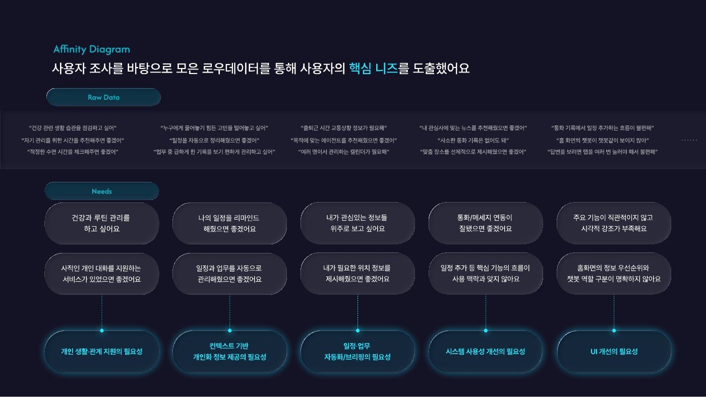
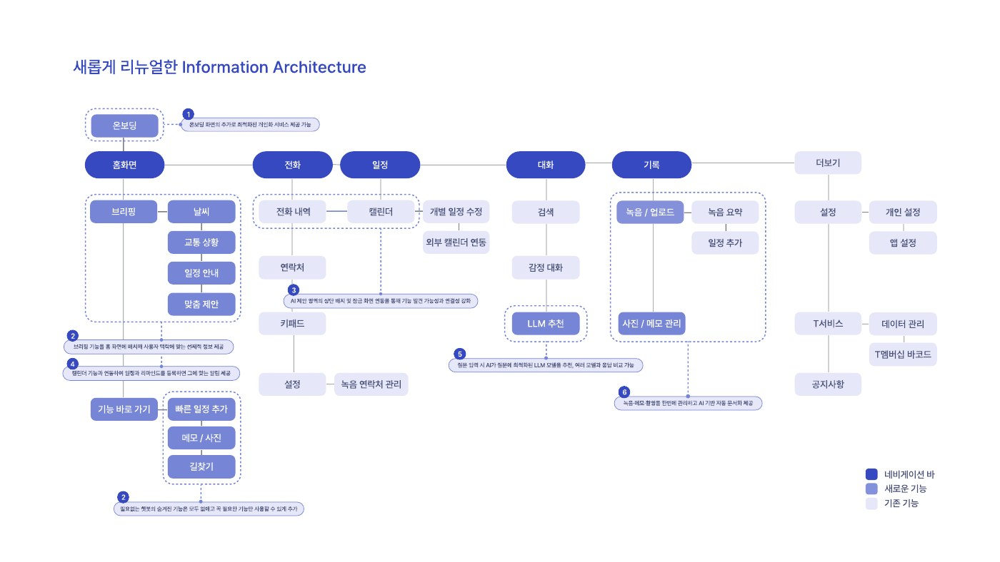
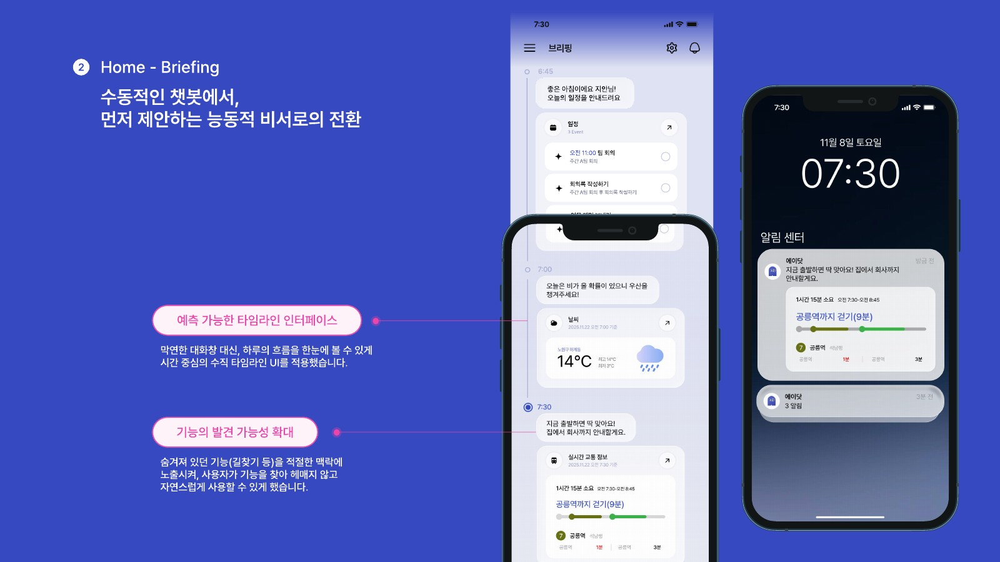
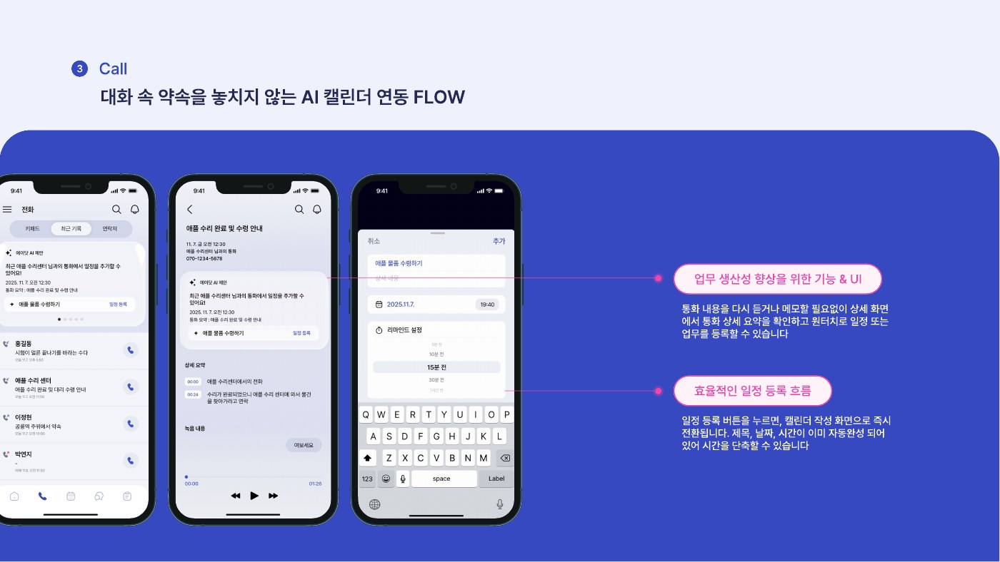
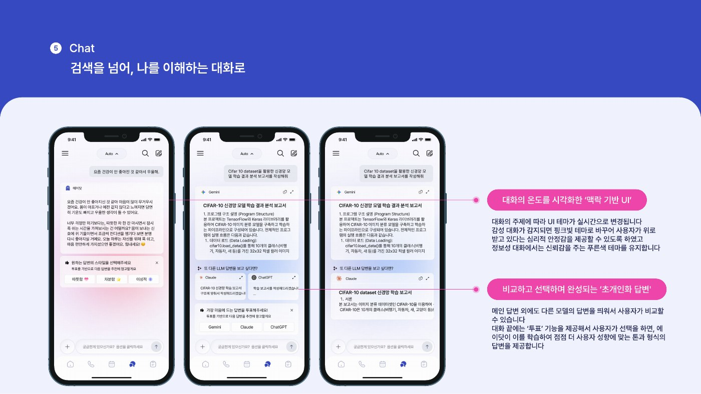
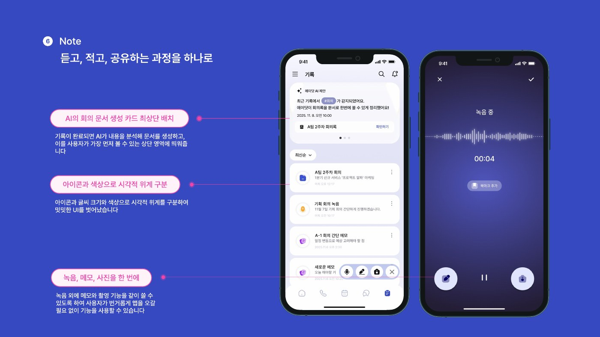

UX Design / 2025
A.dot UX Redesign
사용자의 질문을 기다리는 챗봇에서, 일상의 맥락을 먼저 읽고 제안하는 AI 비서로. 직장인의 하루를 중심으로 에이닷의 기능 연결과 UX/UI를 재설계한 프로젝트입니다.
- Year
- 2025
- Role
- 팀 기반 UX 리서치·서비스 기획 / UX·UI 리뉴얼 제안
- Team
- UX 리서치·서비스 제안 4인 팀 · UI 리뉴얼 Shin Jiwoo
문제 정의 — 기능은 많지만, 일상으로 이어지지 않는 경험
이 프로젝트는 에이닷을 여러 기능의 모음이 아니라 ‘나만의 AI 비서’로 경험하게 만드는 데서 출발했습니다. 조사에서 드러난 핵심 문제는 사용자가 일부 기능에만 머무르고, 일정·통화·기록 사이의 연결을 직접 만들어야 한다는 점이었습니다.
기능을 추가하는 대신, 사용자가 필요한 순간에 기능을 발견하고 다음 행동으로 자연스럽게 이어갈 수 있는 흐름을 설계했습니다.
사용자 이해 — 직장인의 하루에서 찾은 기회
팀 리서치는 에이닷 사용자 인터뷰, Think Aloud 관찰, 직장인의 생활 패턴 인터뷰를 통해 진행했습니다. 원하는 기능을 찾기 어려운 탐색 구조, 번거로운 일정 등록, 직접 질문해야만 돌아오는 수동적인 답변이 주요 문제로 정리됐습니다.
어피니티 다이어그램으로 수집한 의견을 묶고, 페르소나와 유저 저니맵을 통해 출근 준비·이동·업무·퇴근·개인 시간의 맥락을 연결했습니다. 여기서 일정 자동화, 상황에 맞는 브리핑, 통화·회의 기록과 캘린더의 연동을 핵심 기회로 도출했습니다.

설계 방향 — 질문 중심에서 맥락 중심으로
리디자인의 목표는 ‘직장인의 삶 속에 자연스럽게 녹아드는 맞춤형 자동화 AI 비서’입니다. 홈을 대화 입력창 중심에서 개인화된 브리핑 중심으로 바꾸고, 전화·일정·대화·기록을 각기 독립된 기능이 아닌 연결된 경험으로 재구성했습니다.
온보딩에서는 생활 패턴과 이동 수단 등 브리핑에 필요한 정보를 수집하도록 설계했습니다. 사용자가 기능을 먼저 이해할 수 있는 워크스루를 더하고, 기능 간 정보 구조와 주요 작업 흐름을 정리했습니다.

브리핑 — 검색하지 않아도 확인하는 오늘의 정보
시간·장소·일정 데이터를 바탕으로 필요한 정보를 카드로 제공하는 타임라인형 홈을 제안했습니다. 날씨와 이동 정보, 오늘의 할 일을 하루의 흐름 안에서 함께 확인하도록 구성했습니다.
브리핑은 앱 안에서만 끝나지 않도록 잠금화면 알림과 연결했습니다. 사용자가 질문을 만들거나 메뉴를 탐색하기 전에 필요한 정보를 발견하게 하는 것이 설계의 중심입니다.

통화와 일정 — 요약에서 실제 행동까지
통화가 끝난 뒤 AI 제안을 확인하고 일정을 등록하는 과정을 하나의 흐름으로 연결했습니다. 저장 여부를 선택하고, 상단에 배치된 AI 제안에서 제목·날짜·시간이 채워진 일정 작성 화면으로 이동하도록 설계했습니다.
캘린더에는 오늘의 할 일과 개인화된 리마인더를 함께 배치했습니다. 단순한 알림 전달을 넘어, 사용자가 다음 행동을 시작할 수 있도록 브리핑과 관련 기능을 연결하는 방식입니다.

대화와 기록 — 도구를 고르고 정리하는 부담 줄이기
대화에서는 질문에 맞는 LLM을 추천하는 Auto 모드, 정보성·감성 대화에 따른 시각적 구분, 여러 모델의 답변 비교와 선택을 제안했습니다. 모델 선택과 답변 조정의 부담을 사용자가 전부 떠안지 않도록 한 설계입니다.
기록에서는 녹음·메모·사진을 한 흐름에 모으고 AI 요약과 문서 생성 결과를 우선적으로 보여주도록 구성했습니다. 회의 중 기록부터 정리·공유까지 앱을 오가는 과정을 줄이는 데 초점을 맞췄습니다.


결과와 다음 검증
결과물은 사용자 조사와 서비스 시나리오를 정리한 제안서, 그리고 온보딩·브리핑·전화·캘린더·대화·기록을 구체화한 UX/UI 리뉴얼 자료입니다. 기존 화면의 AS-IS와 개선 방향인 TO-BE를 작업 흐름과 함께 제시했습니다.
이 페이지에서 설명하는 기능은 리디자인 제안이며, 실제 서비스에 적용됐거나 효과가 검증됐다는 의미는 아닙니다. 다음 검증 과제는 첫 사용자의 기능 이해도, 일정 등록 과정의 과업 성공률과 소요 시간, 브리핑 정보의 적절성을 사용성 테스트로 확인하는 것입니다.
Document 01 / 02
UX Research & Service Proposal
Open or download the complete presentation.
Document 02 / 02
UX/UI Renewal
Open or download the complete presentation.